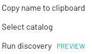
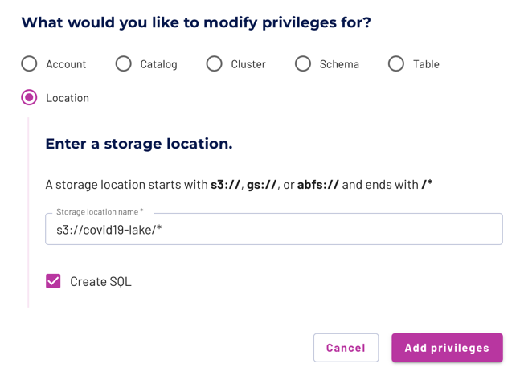

Federate multiple data sources #
One of Starburst Galaxy’s many uses is as an interactive query engine to federate multiple data sources together. With the ability to query both workloads, Starburst Galaxy becomes a single point of access and allows you to access your data wherever it lives.
Federation tutorial architecture #
For this tutorial, analyze one of the datasets in the COVID-19 data lake and run interactive queries to discover the proper insight required to federate this data with the TPC-H dataset. Then, write a SQL query with both data sources to find the total case count by region.
- The first dataset is the Global Coronavirus (COVID-19) Data provided by Enigma. This dataset tracks confirmed cases.
- The second dataset is the standard TPC-H dataset which provides the region information.
This guide walks you through:
- Connecting Starburst Galaxy to AWS
- Running schema discovery
- Querying multiple data sources
Login to Starburst Galaxy #
- Navigate to the Starburst Galaxy login page.
- If you don’t have an account, create a new one and verify the account with your email.
- Switch to an account admin level role. If this is the first time you have logged in, or you have never made any additional roles, you are automatically assigned to the accountadmin role.

Connect Starburst Galaxy to AWS #
Create a catalog in Starburst Galaxy #
Catalogs contain the configuration and connection information needed to access a data source. To gain this access, configure a catalog and use it in a cluster.
This tutorial utilizes the public COVID-19 data lake that lives on AWS, which simplifies the setup process significantly. Instead of creating an S3 catalog, where you are required to have access to an AWS account, the data for this tutorial is accessible without charge and without AWS credentials by connecting to the AWS COVID-19 data lake dataset catalog.
- In the navigation menu, click Catalogs, then Configure a Catalog.
- Scroll down to Select a dataset.
- Select AWS COVID-19 data lake.
- Enter a relevant catalog name such as
aws_covid. - Add a relevant description such as
COVID data from AWS public dataset. - Add the
US East (Ohio) regionto the catalog as this is the only region where the dataset lives. - Select Connect catalog.

Select Save access controls on the Set permissions page to add the default access controls.
Create a cluster in Starburst Galaxy #
A Starburst Galaxy cluster provides the resources necessary to run queries against your catalogs. Use the Starburst Galaxy Cluster explorer to access the catalog data exposed by running clusters.
- On the Add to cluster page, select + Create a new cluster.

- Enter cluster name:
aws-covid-cluster. - Cluster size: Free.
- Cluster type: Standard.
- Catalogs:
aws_covid,tpch. - Cloud provider region: US East (Ohio), also known as us-east-2.
- Select Create cluster.
- Select Add to cluster.
- Select Query my data.
Confirm that you have connected your cluster to both the aws_covid and
tpch catalogs by exploring the aws-covid-cluster in the Cluster
explorer. If you do not have both catalogs, navigate to the Clusters page
and edit your cluster.
After configuring the catalog and cluster, you are directed to the query editor to continue the tutorial. Notice that the location drop-downs in the top right corner have already selected the proper cluster and catalog for querying.
Run schema discovery #
Schema discovery is the Starburst Galaxy feature that analyzes a root object in an object storage location, and returns the schema structure of any tables found. This tutorial uses schema discovery to analyze an individual table in the COVID-19 data lake and generate the SQL command which upon execution creates the corresponding table.
Navigate to your newly created catalog within the cluster explorer. Select the
vertical ellipsis menu for the aws_covid catalog and select Run
discovery.

Enter the URI to be discovered. Use the Global Coronavirus (COVID-19) Data provided by Enigma.
s3://covid19-lake/enigma-jhu/json
Click Run Discovery.

Click Save SQL to save the results in a new tab of the query editor. You now have the schema discovery results which provide the SQL to create the first table, without spending any time investigating yourself.
Configure role-based access control #
The Starburst Galaxy access control system uses roles to provide users with privileges for clusters, catalogs, schemas, tables and other types of entities, such as object storage locations.
Configure the accountadmin role to access the COVID-19 data lake location. (But if you have already gone through these steps at the direction of a different Starburst Galaxy tutorial, there is no need to repeat them.)
- In the navigation menu, select Roles and privileges.
- Click on the
accountadminrole name. - Select the Privileges tab.
- Select Add privilege.
- Add privilege to accountadmin role.
- Choose location as the modify privileges destination.
- Add the storage location:
s3://covid19-lake/*. - Select Create SQL.
- Select Add privilege.

You now have access to all the data sources available in the COVID-19 data lake.
Create the enigma_jhu table #
Navigate to the Query editor. Validate the location drop-downs in the top right hand corner match the cluster and catalog previously created.
Create a schema to hold the COVID-19 table.
CREATE SCHEMA query_federation;
In the top right corner, select the query_federation schema so that
you can easily run the tutorial queries.
The enigma_jhu dataset provides the Global Coronavirus Data and is sourced from John Hopkins and provided by Enigma. This data tracks confirmed COVID-19 cases in provinces, states, and countries across the world, while also providing a county level breakdown in the United States.
Edit your saved query to match the following SQL command to create the table.
CREATE TABLE enigma_jhu (
fips VARCHAR,
admin2 VARCHAR,
province_state VARCHAR,
country_region VARCHAR,
last_update VARCHAR,
latitude DOUBLE,
longitude DOUBLE,
confirmed INTEGER,
deaths INTEGER,
recovered INTEGER,
active INTEGER,
combined_key VARCHAR
)
WITH (
format = 'json',
EXTERNAL_LOCATION = 's3://covid19-lake/enigma-jhu/json/')
;
Run a select all command to view your results. You can also use the table’s vertical ellipsis menu to generate the command for you in the query editor.
SELECT * FROM enigma_jhu LIMIT 10;
Take notice that the admin2 column is actually the county. However, it has
been improperly named. You can also see that the case information is an
aggregate value of each previously updated timestamp. We account for this as you
query.
Interactive analytics #
Starburst Galaxy allows you to run one query and return values that join together information from multiple data sources. In this example first investigate the data provided from the COVID-19 data lake and then join this with the TPC-H dataset which is stored in an entirely different location.
Query the enigma_jhu table #
Analyze the enigma_jhu table to determine the most valuable insights to be reported. Run a select query to return most of the pertinent values and observe the nature of the data within the table.
SELECT
fips,
province_state,
country_region,
last_update,
confirmed,
recovered,
active
FROM
enigma_jhu
ORDER BY
fips;
There are many different last_update times. Evaluate one
specific FIPS code for more information on the data contained within the table.
SELECT
fips,
province_state,
country_region,
last_update,
confirmed,
recovered,
active
FROM
enigma_jhu
WHERE
fips = '36121'
ORDER BY
last_update DESC;
Look at the confirmed case count. It’s an aggregate, adding the previous
confirmed cases to any additionally confirmed cases. Only evaluate data that has
a last_update equal to the maximum value.
Run a query to find the most recent update.
SELECT max(last_update) FROM enigma_jhu;
Only evaluate data that has a last_update equal to the maximum value.
SELECT
fips,
province_state,
country_region,
last_update,
confirmed
FROM
enigma_jhu
WHERE
fips = '36121'
AND last_update = '2020-05-30T02:32:48'
ORDER BY
last_update DESC;
This query is successful for any location that has a last_update value
equal to that maximum entry. However, this is not accurate for any location that
has a different last_update value not equivalent to the maximum entry as
their total count will be excluded. Run the following example focusing on the
state of Utah that this issue.
SELECT DISTINCT
fips
FROM
enigma_jhu
WHERE
province_state = 'Utah'
AND fips NOT IN
(
SELECT
fips
FROM
enigma_jhu
WHERE
province_state = 'Utah'
AND last_update = '2020-05-30T02:32:48'
);
The query returns all the distinct FIPS codes in Utah that do not have an entry
containing the maximum last_update value. Look specifically at one FIPS
code within Utah.
SELECT * FROM enigma_jhu WHERE fips = '49005' ORDER BY last_update DESC;
The maximum last_update for Cache, Utah is on April 4th, 2020, which is at
least one month before the final May 30th, 2020 date. Therefore, you need a
different solution for calculating the sum of confirmed cases. Add a first
value window function to
create a column identifying the most recent update for each fips.
SELECT
fips,
admin2 AS county,
province_state,
country_region,
confirmed,
first_value(last_update) OVER (
PARTITION BY fips ORDER BY last_update DESC) AS most_recent,
last_update
FROM
enigma_jhu;
To only return records that contain the latest last_update value for each
fips, run a nested query which only selects values where last_update =
most_recent.
SELECT
fips,
county,
province_state,
country_region,
confirmed,
last_update
FROM
( SELECT
fips,
admin2 AS county,
province_state,
country_region,
confirmed,
first_value(last_update) OVER (
PARTITION BY fips ORDER BY last_update DESC) AS most_recent,
last_update
FROM
enigma_jhu
) cases
WHERE
last_update = most_recent
GROUP BY
fips,
county,
province_state,
country_region,
confirmed,
last_update;
You can also run this same query using a WITH statement.
WITH
cases AS (
SELECT
fips,
admin2 AS county,
province_state,
country_region,
confirmed,
first_value(last_update) OVER (
PARTITION BY fips ORDER BY last_update DESC) AS most_recent,
last_update
FROM
enigma_jhu
)
SELECT
fips,
county,
province_state,
country_region,
confirmed,
last_update
FROM
cases
WHERE
last_update = most_recent
GROUP BY
fips,
county,
province_state,
country_region,
confirmed,
last_update;
Query the TPC-H dataset #
The TPC-H dataset provides two tables of interest: the nation table and the region table. Both tables assist in aggregating the total confirmed cases per region.
Run a query to achieve familiarity with the nation table.
SELECT * FROM tpch.tiny.nation LIMIT 10;
There are 25 nations within the table.
Run a query to achieve familiarity with the region table.
SELECT * FROM tpch.tiny.region LIMIT 10;
There are 5 regions in the table.
The region_key in the region table acts as the foreign key in the nation
table. Visit the TPC-H dataset page for more
information on the relationships within the dataset.
Federate your data sources #
To determine the region aggregation, join the data lake table with the TPC-H nation table. Only consider the 25 countries that are accounted for in the nation table.
Run the query to append the COVID-19 data with the proper region. Notice this query joins together data from two different data sources.
SELECT
country_region,
first_value(last_update) OVER (
PARTITION BY fips ORDER BY last_update DESC) AS most_recent,
last_update,
confirmed,
nationkey,
name,
regionkey
FROM
aws_covid.query_federation.enigma_jhu enigma
INNER JOIN tpch.tiny.nation nation ON UPPER(enigma.country_region) = nation.name
ORDER BY
confirmed DESC;
This query is a good start; however, it only returns 24 of the 25 countries. Run a distinct query to identify which country is missing.
SELECT DISTINCT
name
FROM
tpch.tiny.nation
WHERE
name NOT IN (
SELECT
UPPER(country_region)
FROM
aws_covid.query_federation.enigma_jhu);
The United States is assigned the country_region value of ‘US’ in the Enigma data. Fix the join query to account for this mismatch.
SELECT
country_region,
confirmed,
nationkey,
name,
regionkey,
FIRST_VALUE(last_update) OVER (
PARTITION BY fips ORDER BY last_update DESC) AS most_recent,
last_update
FROM
aws_covid.query_federation.enigma_jhu enigma
INNER JOIN tpch.tiny.nation nation ON UPPER(enigma.country_region) = REPLACE(nation.name, 'UNITED STATES', 'US')
ORDER BY
nationkey DESC;
Add another inner join to append the region information to each record.
SELECT
country_region,
nationkey,
confirmed,
region.name AS region_name,
FIRST_VALUE(last_update) OVER (
PARTITION BY fips ORDER BY last_update DESC) AS most_recent,
last_update
FROM
aws_covid.query_federation.enigma_jhu enigma
INNER JOIN tpch.tiny.nation nation ON UPPER(enigma.country_region) = replace(nation.name, 'UNITED STATES', 'US')
INNER JOIN tpch.tiny.region region ON nation.regionkey = region.regionkey;
Now, put the puzzle pieces together to fulfill the initial ask of aggregating the confirmed case count by region.
WITH
cases AS (
SELECT
country_region,
nationkey,
confirmed,
region.name AS region_name,
FIRST_VALUE(last_update) OVER (
PARTITION BY fips ORDER BY last_update DESC) AS most_recent,
last_update
FROM
aws_covid.query_federation.enigma_jhu enigma
INNER JOIN tpch.tiny.nation nation ON UPPER(enigma.country_region) = REPLACE(nation.name, 'UNITED STATES', 'US')
INNER JOIN tpch.tiny.region region ON nation.regionkey = region.regionkey
)
SELECT
SUM(confirmed) AS total_confirmed_cases,
region_name
FROM
cases
WHERE
last_update = most_recent
GROUP BY
region_name
ORDER BY
total_confirmed_cases DESC;
Next Steps #
Now that you have explored the query federation capabilities of Starburst Galaxy, explore another tutorial, or connect your own data.
Is the information on this page helpful?
Yes
No